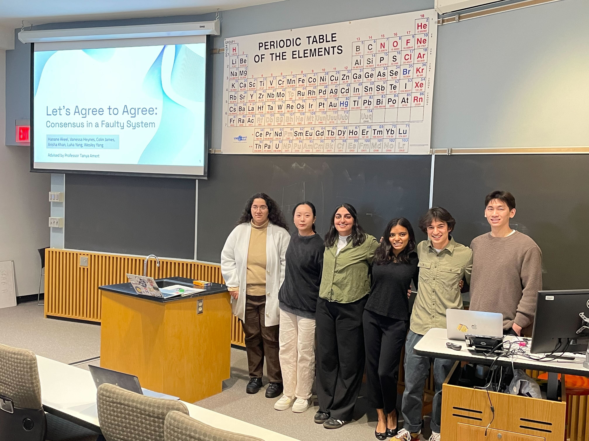

Projects
Consensus in a Faulty System
My group and I worked on exploring consensus algorithms. Specifically, we studied what models of communication processes can follow to reach consensus, and what algorithms are available to implement such a protocol. Our implementations of a leaderless Byzantine Paxos, leader-based RAFT, and HotStuff, a leader-based Byzantine fault tolerant algorithm, serve to demonstrate the ability of these algorithms to reach consensus in the presence of Byzantine faults and network failure.

My individual contributions to this project included leading the project design, implementing network failure, and helping code our leaderless algorithms.
I also created a website displaying our work! You can check it out here.
CarlTune: Navigating Carleton's Music Scene
For this class, I conducted interviews with Carleton musicians to better understand what difficulties exist in navigating the Carleton music scene. This allowed me to create a Figma prototype that would provide students with a streamlined source to access when/where music events are held, and a platform to connect with other campus musicians. Here, I learned about user testing and effective designs. Take a look at my design below!